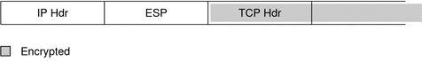
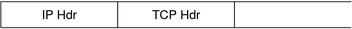
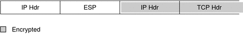

Previous
Previous
Encapsulating Security Payload
The encapsulating security payload (ESP) module provides confidentiality over what the ESP encapsulates. ESP also provides the services that AH provides. However, ESP only provides its protections over the part of the datagram that ESP encapsulates. The authentication services of ESP are optional. These services enable you to use ESP and AH together on the same datagram without redundancy. Because ESP uses encryption-enabling technology, ESP must conform to U.S. export control laws.
ESP encapsulates its data, so ESP only protects the data that follows its beginning in the datagram, as shown in the following illustration.
In a TCP packet, ESP encapsulates only the TCP header and its data. If the packet is an IP-in-IP datagram, ESP protects the inner IP datagram. Per-socket policy allows self-encapsulation, so ESP can encapsulate IP options when ESP needs to.
If self-encapsulation is set, a copy of the IP header is made to construct an IP-in-IP datagram. For example, when self-encapsulation is not set on a TCP socket, the datagram is sent in the following format:
[ IP(a -> b) options + TCP + data ] |
When self-encapsulation is set on that TCP socket, the datagram is sent in the following format:
[ IP(a -> b) + ESP [ IP(a -> b) options + TCP + data ] ] |
For further discussion, see Transport and Tunnel Modes in IPsec.
Security Considerations When Using AH and ESP
The following table compares the protections that are provided by AH and ESP.
Table 19-2 Protections Provided by AH and ESP in IPsec
Protocol | Packet Coverage | Protection | Against Attacks |
|---|---|---|---|
AH | Protects packet from the IP header to the transport header | Provides strong integrity, data authentication:
| Replay, cut-and-paste |
ESP | Protects packet following the beginning of ESP in the datagram. | With encryption option, encrypts the IP datagram. Ensures confidentiality | Eavesdropping |
With authentication option, provides the same protection as AH | Replay, cut-and-paste | ||
With both options, provides strong integrity, data authentication, and confidentiality | Replay, cut-and-paste, eavesdropping |
Authentication and Encryption Algorithms in IPsec
IPsec security protocols use two types of algorithms, authentication and encryption. The AH module uses authentication algorithms. The ESP module can use encryption as well as authentication algorithms. You can obtain a list of the algorithms on your system and their properties by using the ipsecalgs command. For more information, see the ipsecalgs(1M) man page. You can also use the functions that are described in the getipsecalgbyname(3NSL) man page to retrieve the properties of algorithms.
IPsec on a Solaris system uses the Solaris cryptographic framework to access the algorithms. The framework provides a central repository for algorithms, in addition to other services. The framework enables IPsec to take advantage of high performance cryptographic hardware accelerators. The framework also provides resource control features. For example, the framework enables you to limit the amount of CPU time spent in cryptographic operations in the kernel. For more information, see the following:
Chapter 12, "Solaris Cryptographic Framework (Overview)," in System Administration Guide: Security Services
Chapter 8, "Introduction to the Solaris Cryptographic Framework," in Solaris Security for Developers Guide
Authentication Algorithms in IPsec
Authentication algorithms produce an integrity checksum value or digest that is based on the data and a key. The AH module uses authentication algorithms. The ESP module can use authentication algorithms as well.
Encryption Algorithms in IPsec
Encryption algorithms encrypt data with a key. The ESP module in IPsec uses encryption algorithms. The algorithms operate on data in units of a block size. By default, the DES-CBC, 3DES-CBC, AES-CBC, and Blowfish-CBC algorithms are installed. The key sizes that are supported by the AES-CBC and Blowfish-CBC algorithms are limited to 128 bits.
AES-CBC and Blowfish-CBC algorithms that support key sizes that are greater than 128 bits are available to IPsec when you install the Solaris Encryption Kit. However, not all encryption algorithms are available outside of the United States. The kit is available on a separate CD that is not part of the Solaris 10 installation box. The Solaris 10 Encryption Kit Installation Guide describes how to install the kit. For more information, see the Sun Downloads web site. To download the kit, click the Downloads A-Z tab, then click the letter S. The Solaris 10 Encryption Kit is among the first twenty entries.
IPsec Protection Policies
IPsec protection policies can use any of the security mechanisms. IPsec policies can be applied at the following levels:
On a system-wide level
On a per-socket level
IPsec applies the system-wide policy to outbound datagrams and inbound datagrams. Outbound datagrams are either sent with protection or without protection. If protection is applied, the algorithms are either specific or non-specific. You can apply some additional rules to outbound datagrams, because of the additional data that is known by the system. Inbound datagrams can be either accepted or dropped. The decision to drop or accept an inbound datagram is based on several criteria, which sometimes overlap or conflict. Conflicts are resolved by determining which rule is parsed first. The traffic is automatically accepted, except when a policy entry states that traffic should bypass all other policies.
The policy that normally protects a datagram can be bypassed. You can either specify an exception in the system-wide policy, or you can request a bypass in the per-socket policy. For traffic within a system, policies are enforced, but actual security mechanisms are not applied. Instead, the outbound policy on an intra-system packet translates into an inbound packet that has had those mechanisms applied.
You use the ipsecinit.conf file and the ipsecconf command to configure IPsec policies. For details and examples, see the ipsecconf(1M) man page.
Transport and Tunnel Modes in IPsec
The IPsec standards define two distinct modes of IPsec operation, transport mode and tunnel mode. The modes do not affect the encoding of packets. The packets are protected by AH, ESP, or both in each mode. The modes differ in policy application when the inner packet is an IP packet.
In transport mode, the outer header determines the IPsec policy that protects the inner IP packet.
In tunnel mode, the inner IP packet determines the IPsec policy that protects its contents.
In transport mode, the outer header, the next header, and any ports that the next header supports, can be used to determine IPsec policy. In effect, IPsec can enforce different transport mode policies between two IP addresses to the granularity of a single port. For example, if the next header is TCP, which supports ports, IPsec policy can be set for a TCP port of the outer IP address. Similarly, if the next header is an IP header, the outer header and the inner IP header can be used to determine IPsec policy.
Tunnel mode works only on IP-in-IP datagrams. Tunneling in tunnel mode can be useful when computer workers at home are connecting to a central computer location. In tunnel mode, IPsec policy is enforced on the contents of the inner IP datagram. Different IPsec policies can be enforced for different inner IP addresses. That is, the inner IP header, its next header, and the ports that the next header supports, can enforce a policy. Unlike transport mode, in tunnel mode the outer IP header does not dictate the policy of its inner IP datagram.
Therefore, in tunnel mode, IPsec policy can be specified for subnets of a LAN behind a router and can be specified for ports on those subnets. IPsec policy can also be specified for particular IP addresses, that is, hosts, on those subnets. The ports of those hosts can also have a specific IPsec policy. However, if a dynamic routing protocol is run over a tunnel, neither subnet selection nor address selection should be used, because the view of the network topology on the peer network could change. Changes would invalidate the static IPsec policy. For examples of tunneling procedures that include configuring static routes, see Protecting a VPN With IPsec.
In Solaris, tunnel mode can be enforced only on an IP tunneling network interface. The ipsecconf command provides a tunnel keyword to select an IP tunneling network interface. When the tunnel keyword is present in a rule, all selectors that are specified in that rule apply to the inner packet.
In transport mode, ESP, AH, or both ESP and AH, can protect the datagram.
Figure 19-3 shows an IP header with an unprotected TCP packet.
Figure 19-3 Unprotected IP Packet Carrying TCP Information
In transport mode, ESP protects the data as shown in Figure 19-4.
Figure 19-4 Protected IP Packet Carrying TCP Information
In transport mode, AH protects the data as shown in Figure 19-5.
Figure 19-5 Packet Protected by an Authentication Header
AH actually covers the data before the data appears in the datagram. Consequently, the protection that is provided by AH, even in transport mode, covers some of the IP header.
In tunnel mode, the entire datagram is inside the protection of an IPsec header. The datagram in Figure 19-3 is protected in tunnel mode by an outer IPsec header, and in this case ESP, as is shown in Figure 19-6.
Figure 19-6 IPsec Packet Protected in Tunnel Mode
The ipsecconf command includes keywords to set tunnels in tunnel mode or in transport mode.
For details on per-socket policy, see the ipsec(7P) man page.
For an example of per-socket policy, see How to Secure a Web Server With IPsec.
For more information about tunnels, see the ipsecconf(1M) man page.
For an example of tunnel configuration, see How to Protect a VPN With an IPsec Tunnel in Tunnel Mode Over IPv4.